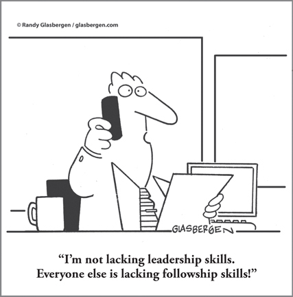

CHAPTER 14
Whole Brain Leadership: The Secret to Thriving in Today’s World

CHAPTER HIGHLIGHTS
 Understanding and accepting the consequences of your thinking preferences is the first step toward becoming a better leader.
Understanding and accepting the consequences of your thinking preferences is the first step toward becoming a better leader.
 Being an effective leader requires using a Whole Brain approach with everyone you work with.
Being an effective leader requires using a Whole Brain approach with everyone you work with.
 Every stage of leadership requires Whole Brain Thinking, but in different degrees based on the work required. The model in Drotter, Charan, and Noel’s book The Leadership Pipeline1 can be mapped against the Whole Brain Model to reveal the thinking required at each stage and how the thinking shifts as the person progresses as a leader.
Every stage of leadership requires Whole Brain Thinking, but in different degrees based on the work required. The model in Drotter, Charan, and Noel’s book The Leadership Pipeline1 can be mapped against the Whole Brain Model to reveal the thinking required at each stage and how the thinking shifts as the person progresses as a leader.
 To become a Whole Brain leader, you also have to recognize where your mental blind spots are.
To become a Whole Brain leader, you also have to recognize where your mental blind spots are.
Meeting the rapidly escalating demands for energy in India, the second most populous nation in the world, is no easy task. For the leaders at power company CLP India,2 it was both a huge opportunity and a huge challenge. It wasn’t that they lacked experience or technical skill. They were all highly talented people with deep industry knowledge. But would that be enough to meet the growing capacity needs? To take advantage of innovative renewable fuel options? To attract the best and the brightest to work in remote locations in a not-so-glamorous job?
At a start-up, a creative agency, or a hospitality company, it’s usually pretty well accepted that the leaders need to be comfortable with risk taking, imagination, relationship building, and other right-mode, C/D thinking skills. But what about an accounting firm, a manufacturing facility, or a utility like CLP?
Rich DeSerio,3 former manager of IBM’s award-winning Leadership Development Program’s Global Design Team, once said that good leaders move in anticipation of an event, rather than in reaction to it. This is particularly true when the world is constantly changing all around us and growing more complex. Leaders often cannot look to the past for guidance on how to handle today’s issues because they’re dealing with challenges that have very little precedent. This isn’t an isolated phenomenon, affecting leaders only in certain industries; it’s universal. Every business has to be more agile and anticipatory to stay ahead.
Rich puts it this way:
The most important factor IBM looks for in leaders, aside from all the common things, is the ability to lead in a very uncertain world. Markets, economies, these all used to be very predictable. There used to be a very prescribed path. Today, the theme is charting your own course through new waters. There is no one to go to because there are no people who have done what you have to do. You no longer have access to that advice. It’s up to you.
People often want to know what the most effective leadership style is. The fact is, there is no “one size fits all” effective leadership style. Leadership is personal; it’s individual. The best leaders aren’t trying to be someone they’re not or to force-fit themselves into a prescribed mold. They understand their own style—who they are—and have learned how to leverage it.
So if there is no one type of leader you have to be, what’s the key to being an effective leader? Our colleague Michael Morgan4 in Australia often points out that it doesn’t matter what kind of business you’re in; being successful in business requires Whole Brain Thinking. I would add that no matter what your personal leadership style is, being a successful leader requires Whole Brain Thinking. This means that you understand both your preferences and your blind spots so that you can fully leverage your mental strengths and stretch outside them when necessary.
In fact, the role of CEO actually requires Whole Brain Thinking by design because it necessitates working with and leading a wide range of functions, from finance to strategy to people issues to execution. Our research on CEO HBDI thinking styles (see Chapter 20) data has demonstrated that CEOs have a high percentage of the rare (less than 3 percent of all profiles) Whole Brain profile that has preferences equally distributed across all four quadrants. But the demand for Whole Brain Thinking is no longer limited to the CEO ranks. Our world now requires adaptive and integrative thinking that spans all four quadrants. We no longer have the luxury of relegating ourselves to limited brain bandwidth.
Today’s effective leaders are “thought” leaders, highly skilled thinkers who are able to situationally access the different thinking styles across the Whole Brain Model that a given challenge requires, irrespective of their natural preferences.
Leaders at CLP India were able to push the company to lead the way in renewable energy because they learned that their highly technical, analytical style of thinking wouldn’t be enough to meet the demands of the market. They “built up the red C quadrant, emphasizing a core CLP value: respect for people, as well as collaboration and communication, and the yellow D quadrant for special projects requiring innovation,” as our colleague Prasad Deshpande puts it. He worked with the leaders, using Whole Brain Thinking as the catalyst to change their mindsets about growth, social responsibility, sustainability, and what it takes to build a brand that can attract the best talent available, and in so doing helped the leaders change the culture of the company as well. (To learn more about the CLP program, you can read the full case study at www.wholebrainbusinessbook.com.)
The leadership mentality is the driving force in a company, and the ability to shift one’s thinking to match the needs of a given situation is essential. But for the great majority of us who do not have multidominant profiles, this requires learning how to expand our mental bandwidth and unleash our full thinking capacity as we lead.
Breaking Existing Patterns
Ultimately, becoming a Whole Brain leader is about building your thinking agility, and that can be uncomfortable. You’ve developed your mental habits—those routines that have always worked for you—and they feel safe. But when leaders approach a new situation with their habitual thinking, they severely limit their ability to generate new ideas or solutions. If your brain continues to process your thought patterns using the same neural pathways that it used in the past, your ability to lead in different ways will not evolve to meet the new demands of the situation. Leading in new ways requires new connections and processes in the brain, breaking your existing patterns.
We know that when you actively engage the brain’s capacities, drawing from all four quadrants, you have a larger “playing field” from which to draw your thinking—there is more cross-fertilization between neural synapses, providing the opportunity for new connections to form.
A leader of a large multinational firm once approached me after discovering his HBDI Profile as part of a company coaching initiative and said, “This explains it all.” After some discussion, it became clear that he had become so used to living in the A quadrant—thinking analytically, driving performance, and living with the numbers—that he had totally neglected his more C-quadrant relationship skills. Up to that point, his roles had not required the level of social savvy that his current role demanded, and now he was in the hot seat; in fact, that was why he had been encouraged to pursue this coaching. He had found himself making excuses to himself and others, saying, “That’s not the kind of leader I am. I don’t do the soft stuff—I do the hard stuff,” and the like. When he discovered through his profile that he had access to all four quadrants and that he could learn to shift his thinking, he realized that it was time for him to do so—time for him to make it his personal objective to grow and develop in his less-preferred modes. It was up to him, he was motivated, and he had the resources provided to do the work.
Once you have a better understanding of yourself through the lens of Whole Brain Thinking, you can begin to see opportunities for optimizing your approach to decision making, team development, and dealing with key leadership issues. As a leader, you will get the greatest value from Whole Brain Thinking by being situational in your daily activities. The idea is not to attempt to change the unchangeable but to take advantage of the flexibility we all have to become situationally more effective across a broad range of key leadership issues.
An example that comes up frequently for many leaders today is strategic thinking—not the rigors of strategic planning, but the kind of thinking that should precede strategic planning (see Chapter 16). Experience has demonstrated that it’s quite possible to open up senior leaders to their strategic thinking potential in as short a time as three days. Once it is experienced, this mode of thinking almost instantly becomes more available on a daily basis.
Focus your leadership training and development priorities on ways to unleash your thinking capability across the mental aspects of the key leadership issues that you are faced with. Over the course of your career, you’ve probably already demonstrated an enormous capacity to deliver the functional system requirements. To optimize business results in today’s world, however, you must now go beyond your day-to-day mental boundaries. For this reason, you must be able to access and develop those mental processes that are still at the lower levels of your learning curve. In addition to strategic thinking, modes that are in high demand today include critical thinking, mindful focus, collaboration, empathy, problem/dilemma solving, intuitive thinking, conceptualizing, dealing with ambiguity, visualizing, and creative processing. (For more on critical twenty-first-century leadership competencies, see Chapter 20.) All of these are like ripples in a pond: they generate additional ripples. To see what I mean, let’s look at a specific example of such a “ripple effect.”
Learning to Be Situationally Whole
Years ago, I asked participants in a class in advanced management whether they could draw. About 8 hands out of 100 slowly raised. When I asked them if they would like to be able to draw, 80 hands shot up without hesitation. Aha! What would happen if I taught the 80 how to draw? What if I affirmed them in their desire? What would that lead to? What would be the consequences? After the response I got from that group of 80, I decided to help many hundreds more leaders learn how to draw. The objective was not to have them become artists, although some did. The objective was to help them to do something they had always aspired to but could not do because they had no good way to access their latent capability. Once that capability was accessed, the affirmation was enormous. Suddenly they could “see,” not for the purpose of drawing, which of course they now could do, but for the purpose of understanding more of the world around them. They were very good at thinking analytically, but “seeing” previously unseen possibilities opened up a whole new domain of thinking for them. New creative thinking skills became less intimidating. The notion of strategic thinking began to make sense.
Seeing is a great example of the kind of stuff leaders need to be able to do. You can hire experts in finance and lean and technology. What you can’t hire is your own ability to think critically, creatively, and strategically, to think visually, intuitively, and globally—to be able to project your leadership out into the future.
The human brain is still quite malleable when we are in our thirties and forties, and even in our fifties and sixties—much more so than we used to think. Significant learning can still take place well beyond our traditional school years. The benefits to a business of having a business leader who is able to think more effectively are beyond calculation. No matter what your thinking preferences may be, the degree of wholeness of your mental process is the degree to which you are situational. I have discovered that even in our secondary areas of mental preference, we can become quite knowledgeable and even expert level if we are motivated to use these modes situationally. So no, we do not have to have a perfectly balanced profile in order to be whole. That, to me, is a message of hope!
I’m not suggesting that you abandon your natural preferences. Rather, this is about using your strengths more effectively in service of the business’s needs and, just as important, learning to see beyond the mental blind spots that may have resulted from your having applied and reinforced your preferences over the course of your life, education, and career. Embracing complexity requires constant learning and exposure to diverse points of view. You will have to break through your existing mindsets and “mental defaults” to be able to appreciate and take advantage of new perspectives and approaches. Believe me, it is worth the effort.
Tips for Exercising Whole Brain Leadership
1. Understand all the brainpower that’s available—your own as well as others’. Ask yourself, “How much brainpower do I really use—both of my own, and of my people?” What has been called “management by walking around” (MBWA),5 I call “leveraging the mental landscape.” If you’re not spending at least half your time visiting the offices or connecting virtually to engage the thinking and array of quadrants of your direct reports, the field, and your customers, you’re insulating yourself from reality and missing out on the full breadth of thinking resources that you have available.
2. Ask yourself, “How can I apply this new understanding of thinking to an issue we are facing right now?” We need to figure out how to listen for, and leverage, the differences in thinking on our teams, especially when we are facing tough new challenges. Who brings fresh thinking to the mix, for you and the issues you are facing? Are some of those ideas even a little uncomfortable? If they’re not, maybe you need to hire someone who makes you uncomfortable and challenges you—and once you do, listen to that person’s ideas. Consciously look for, encourage, and cultivate all styles of thinking, because your organization’s health and survival depend on it.
As Rich DeSerio points out, IBM views diversity as a competitive advantage—the broad definition of diversity, including diversity of thought. “We strongly believe and emphasize: the more perspectives and viewpoints you can get, the better.”
3. Get out of your own “thinking confines.” Managers look. Leaders see. It’s very easy to get contaminated by your own industry mindset or by your own internal culture mindset. The constancy of complexity and change means that it’s probable current ways of doing business will be altered dramatically by a new technology or trend in the future. Adopt an approach that allows you to regularly escape your thinking confines to improve your strategic and innovative thinking about these possibilities. Learn to scan the horizon for new ideas and trends. Think beyond the boundaries of your world: strategically scan the web, read books and magazines, attend different conferences, and network widely to learn about industries that have nothing to do with yours today, but that might affect you tomorrow. Look outside your current worldview, or risk being caught off-guard.
4. Play to people’s strengths. Whenever possible, assign with thinking in mind and look for fit (see Chapters 9 and 10). Having people disengaged and burning out because their jobs don’t match their individual thinking preferences can cost your company millions of dollars. Use the HBDI and other Whole Brain tools to understand how you and your people think and how to best utilize their diverse talents.
5. Manage your blind spots. Most leaders have tasks and responsibilities that include areas of lower preference and skill. Seek out and leverage feedback from others to ensure that you are fully aware of your blind spots. Take action to address them by beefing up your skill set and/or leveraging the complementary skills on your team to get the work done. You will help those you lead better understand how to develop in areas of lesser preference by modeling this yourself.
6. Remember that thinking is a form of doing. As leaders, many of us know but forget that our primary job is to think. We need to optimize what we’re doing with our thinking time. Our culture is focused on “do, do, do,” to the point where thinking has been devalued. Many leaders have begun to view thinking time as a luxury, even as nonproductive time. The notion of a leader saying, “My primary job is to think,” induces guilt, or makes us anxious that it might look as if we’re not doing anything at all. But thinking should be the primary focus of every leader. It’s your responsibility to own, schedule, and protect your thinking time, as well as the thinking time for those you lead.
SO WHAT?
 All leaders have access to all four Whole Brain quadrants; however, only when we decide we can be situational in our thinking do we optimize and leverage our own brainpower.
All leaders have access to all four Whole Brain quadrants; however, only when we decide we can be situational in our thinking do we optimize and leverage our own brainpower.
 Breaking existing patterns and leadership reflexes is the first step in becoming more situational.
Breaking existing patterns and leadership reflexes is the first step in becoming more situational.
 Leaders will see a significant improvement in their ability to lead others when they invest the time and energy in understanding and speaking the language of those they lead.
Leaders will see a significant improvement in their ability to lead others when they invest the time and energy in understanding and speaking the language of those they lead.
 Being a situational Whole Brain leader does not require that you abandon your natural preferences; it does require that you break out of your thinking confines. Recognize your blind spots, learn how to grow beyond your mental defaults to get the results you need, and take advantage of all the thinking resources available to you.
Being a situational Whole Brain leader does not require that you abandon your natural preferences; it does require that you break out of your thinking confines. Recognize your blind spots, learn how to grow beyond your mental defaults to get the results you need, and take advantage of all the thinking resources available to you.
 This is no longer just the realm of the CEO; leaders at all levels require adaptive and integrative thinking that spans all four quadrants in order to lead successfully in an increasingly complex world.
This is no longer just the realm of the CEO; leaders at all levels require adaptive and integrative thinking that spans all four quadrants in order to lead successfully in an increasingly complex world.